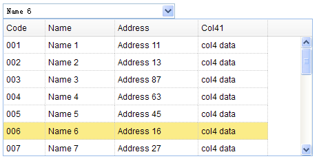

组合表格
继承$.fn.combo.defaults和$.fn.datagrid.defaults，可以使用combo和datagrid的相关属性和方法，具体参考combo.html和datagrid。使用$.fn.combogrid.defaults重载默认值。
依赖关系
- 自定义组合框
- 数据表格
使用方法
<select id="cc" name="dept" style="width:250px;"></select>
<input id="cc" name="dept" value="01">
$('#cc').combogrid({
panelWidth:450,
value:'006',
idField:'code',
textField:'name',
url:'datagrid_data.json',
columns:[[
{field:'code',title:'Code',width:60},
{field:'name',title:'Name',width:100},
{field:'addr',title:'Address',width:120},
{field:'col4',title:'Col41',width:100}
]]
});
属性
属性继承自定义组合框和数据表格，以下是组合表格独有的属性。
| 名称 | 类型 | 描述 | 默认值 |
|---|---|---|---|
| loadMsg（载入时信息） | string（字符串） | 当数据表格载入远程数据时的提示信息。 | null |
| idField（id字段） | string（字符串） | 标识表格行数据唯一性的字段名。 | null |
| textField（文本域） | string（字符串） | 显示在文本框中的文本域的名称。 | null |
| mode（模式） | string（字符串） | 定义当文本发生改变时如何载入组合表格的数据。如果组合表格要从远程服务器载入数据，设置为'remote'。 | local |
| filter（过滤器） | function(q, row) | 定义当模式设置为'local'时如何选择本地数据，返回true将选择一行。
$('#cc').combogrid({
filter: function(q, row){
var opts = $(this).combogrid('options');
return row[opts.textField].indexOf(q) == 0;
}
});
|
事件
事件继承自定义组合框和数据表格。
方法
方法继承自定义组合框，以下是组合表格独有的或者重载自定义组合框的方法。
| 名称 | 参数 | 描述 |
|---|---|---|
| options | none | 返回属性对象。 |
| grid | none | 返回数据表格对象。 |
| setValues | values | 设置组合框的值，参数values是一个数组。 |
| setValue | value | 设置组合框的值 |
| clear | none | 清除组合框的值。 |